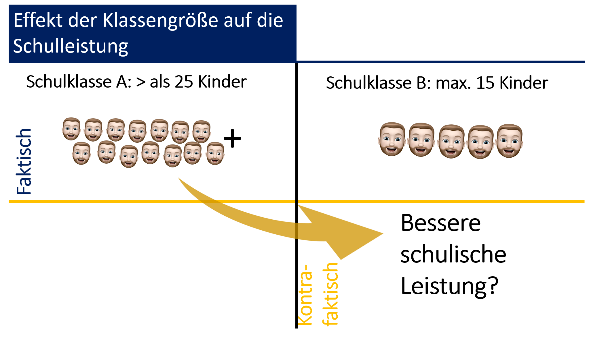
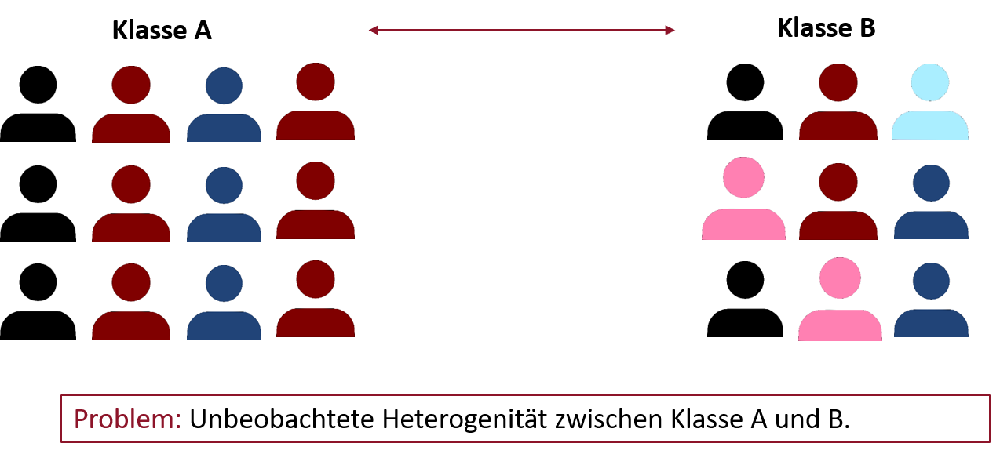
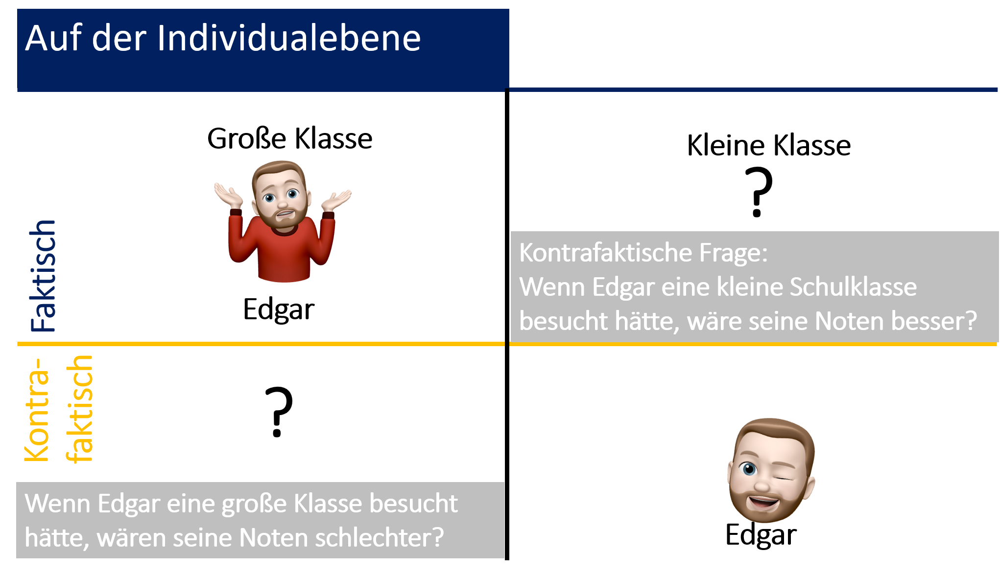
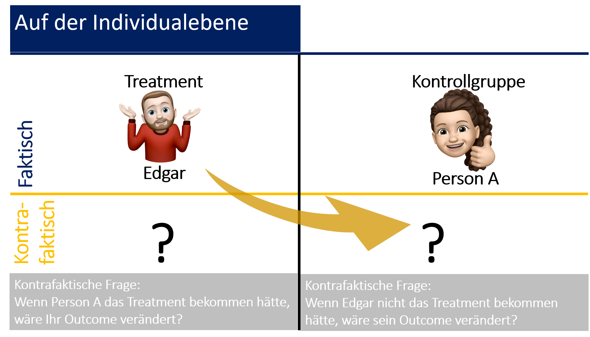
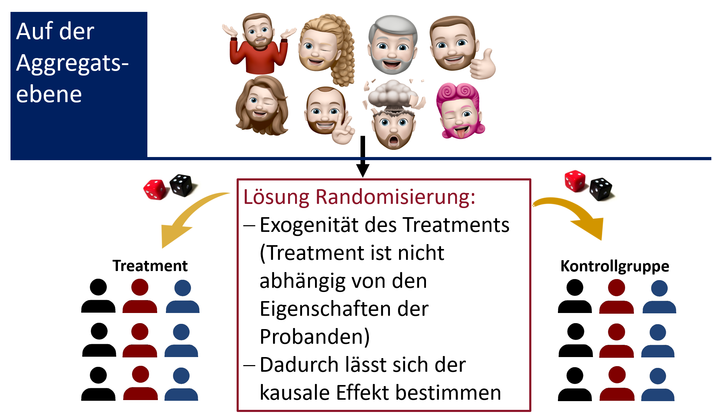
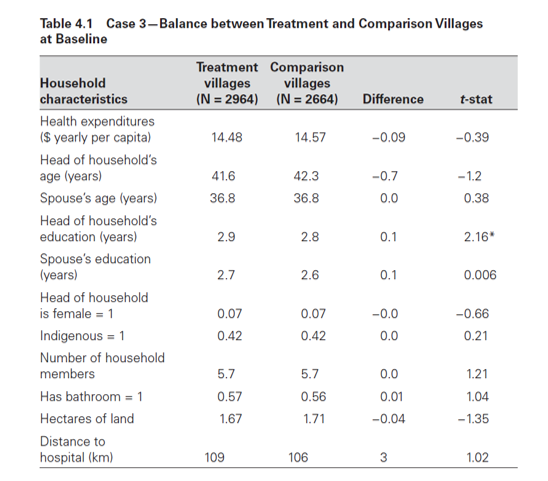
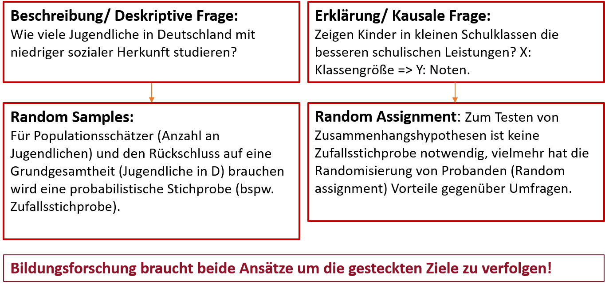
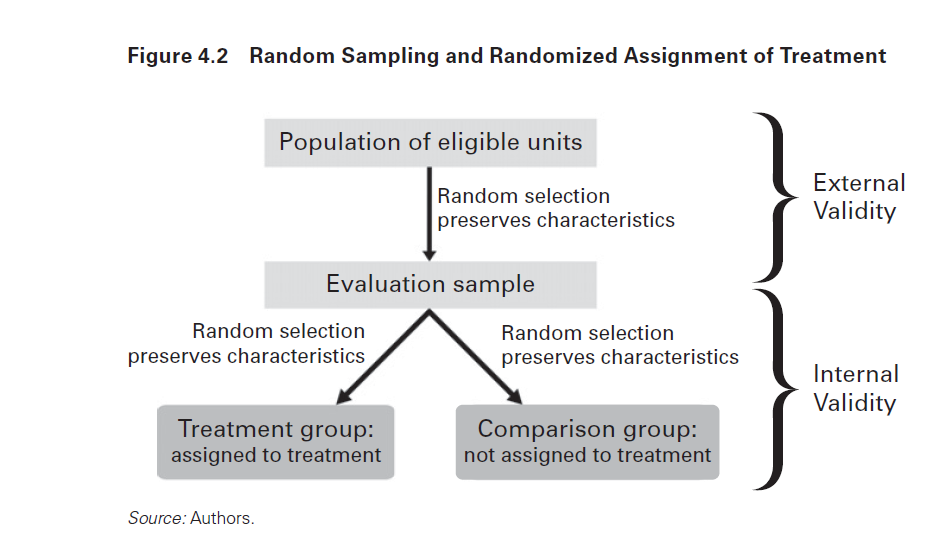

“Bei Evaluationen geht es um
den Wert einer Sache bzw. genauer um dessen Bestimmung, wobei das zu bewertende
Objekt als Evaluationsgegenstand (Evaluandum) bezeichnet wird.”
“Gegenstand
einer Evaluation können dabei Produkte, Prozesse, Veranstaltungen,
Interventionen oder ganze Maßnahmenbündel sein, die mehr oder weniger systematisch bewertet werden.”
“Wie Kromey (2001, S. 106) erläutert, meint Evaluation im
alltagssprachlichen Sinne jedwede Form der mehr oder weniger systematischen
Beurteilung:”
“Irgend etwas wird von irgend jemandem nach irgendwelchen Kriterien
in irgendeiner Weise bewertet. Derselbe Sachverhalt kann – wie die Alltagserfahrung
– von verschiedenen Individuen sehr unterschiedlich bis gegensätzlich
eingeschätzt und beurteilt werden (Kromey 2001, S. 106).”
Wissenschaftliche Evaluation vs. Alltagsevaluation 🙈
Wissenschaftliche Evaluation
Systematische Sammlung empirischer Evidenzen
Systematik und präzise Dokumentation
Intersubjektive Nachprüfbarkeit
Identifikation von Ursache und Wirkung
“Das wesentliche Ziel vieler Evaluationen entspricht dieser engeren Definition des Evaluationsbegriffs,
nämlich Antworten auf Fragen der kausalen Inferenz zu geben:”
“Die Erfassung und Bewertung von Wirkungen und ihre kausale Ursachenzuschreibung sind die
zentralen Aufgaben von Evaluation“ (Stockmann 2006, S. 106; Hervorhebung im Orig.).”
Funktionen von Evaluationen
(siehe bspw. Treischl & Wolbring 2020:21-24)
Erkenntnisfunktion
Kontrollfunktion
Transparenz und Dialogfunktion
Legitimationsfunktion
Evaluationsstandards
Systematische Untersuchung
Kompetenz
Integrität und Ehrlichkeit
Respektvoller Umgang mit Menschen
Verantwortung gegenüber der öffentlichen Wohlfahrt
Kausalität in der Bildungsforschung
Evaluation anhand von Beobachtungsdaten

Messung kausaler Effekte

Add apples, but don't add, divide, or compare apples and oranges! 🧛
The Fundamental Problem of Causal Inference I

The Fundamental Problem of Causal Inference II

Etwas formaler:
Sei D eine Dummy-Variable (d.h. eine binär kodierte Variable), welche das Auftreten bzw. Wegbleiben eines Stimulus (Ursache) anzeigt.
Der kausale Effekt δ ist definiert als Differenz zwischen Y¹, dem Zustand der Zielvariable Y nach Auftreten (D = 1) der Ursache, und Y°, dem Zustand der Zielvariable ohne Auftreten (D = 0) der Ursache.
δ = Y¹ - Y°
Eine Person kann nicht gleichzeitig ein Treatment bekommen und in der Kontrollgruppe sein.
Ergo: Messung von Kausalität auf der Mikroebene des Individuums ist damit selbst
im Experiment ausgeschlossen.
Problem: Wir sind auf der Suche nach einer kontrafaktischen Annäherungen eines (unbeobachtes) Ergebnisses:
Welchen Schulerfolg hätte Person i gehabt, wenn die Person die Klasse B anstelle der Klasse A besucht hätte?
Lösung: The Power of Random Assignment (Randomisierung)
Kausaler Effekt: Messung des Average Treatment Effects

Dies korrespondiert mit dem Prinzip von Compare Like with Like
Ein kurzer Auszug aus der Literatur
“Durch die Randomisierung ist bei hinreichend großen Gruppen von einer Gleichverteilung in der
Kontroll- und Versuchsgruppe (Bsp: ca. 50% Männer/Frauen) in allen möglichen Drittvariablen auszugehen.”
“Randomisierung umgeht somit das Problem der unbeobachteten Heterogenität (Gruppen unterscheiden
sich ohne dass wir es beobachtet haben) von Gruppen. Die Randomisierung hilft uns auch bei methodischen Problemen
(wie bspw. das Problem von Scheinkorrelationen).”
Hat die Randomisierung funktioniert?

Um die Vorteile der Randomisierung zu nutzen muss die EBF experimentelle Forschungsdesigns einsetzen.
Experimentelle Bildungsforschung
Experimentelles Design
Merkmale
Zufallsbedingte Aufteilung (Randomisierung) auf Kontroll- und Versuchsgruppe (Treatment)
Zufällige Aufteilung auf beide Gruppen kontrolliert für alle Drittvariablen (Compare Like with Like)
Experimentelles Design
Manipulation: Vermutete Ursache (= Stimulus) in der Versuchsgruppe
Manipulation: Keine Ursache (= kein Stimulus) in der Kontrollgruppe
Werte in der Versuchsgruppe die über der Schwelle der Zufallsvarianz (t-Test) liegen werden auf den Stimulus zurückgeführt und als kausaler Effekt interpretiert.
Experimentelles Design: Beispiel Weiterbildungsmaßnahme
Zuweisung
X
Messung t1
R(andomisierung)
Kontrollgruppe
O (Oberservation)
R
Versuchsgruppe
O
Quasi-Experimentelles Design
Zuordnung auf Kontroll- und Versuchsgruppe erfolgt nicht durch Randomisierung
Quasi-Experimente: Stimulus wird gegeben, Zuordnung erfolgt selbst durch die Forschungsobjekte
Evaluationsforschung basiert oftmals auf quasi-experimenteller Versuchsanordnungen (Probleme?)
Notation Quasi-Experiment: Beispiel Weiterbildungsmaßnahme
Zuweisung
X
Messung t1
Kontrollgruppe
O
Versuchsgruppe
O
“Experiments in the social sciences? What should we and what should we not do. The Little-Albert-Experiment.”
Kaum experimentelle Forschungsdesigns in der EBF
Häufige Bedenken von Stakeholdern:
Experimente sind häufig nicht ethisch vertretbar.
Experimente sind nicht praktisch umsetzbar sind.
Experimente sind künstlich aufgrund der Künstlichkeit des Settings.
Experimente basieren auf einer geringen Fallzahl und die Ergebnisse sind nicht auf andere Kontexte übertragbar.
Einwände zum Teil nicht zutreffend, weil:
Ethikboard müssen Verstöße gegen ethische Einwände einlegen.
Experimente sind auch in der Bildungsforschung möglich.
Künstlichkeit betrifft in erster Instanz Laborexperimente.
Geringe Fallzahl ist kein allgemeines Problem experimenteller Forschung.
"Repräsentativität"

Statt dessen müssen wir uns über die interne und die externe Validität unserer Evaluationsbefunde Gedanken machen!
Keine Ahnung was interne oder externe Validität ist? Click down! 🧐 👇
Ein kurzer Auszug aus der Literatur zur Vertiefung.
(Treischl & Wolbring 2020: Kapitel 6) 🧐 👇
“Der Begriff der internen Validität zielt darauf ab, inwiefern ein Effekt tatsächlich
kausal auf das Treatment zurückführbar ist.”
“Anders ausgedrückt, bemisst
die interne Validität damit, inwieweit mögliche Störfaktoren durch das gewählte
Forschungsdesign ausgeschlossen werden oder ob nicht doch alternative Erklärungen
einen Befund hervorgebracht haben könnten.”
“Im Kern beziehen sich Fragen
nach der internen Validität also auf die Belastbarkeit von Wirkungsaussagen
im Zuge einer Evaluation.”
“Neben Fragen der internen Validität stellt sich auch bei Evaluationen die Frage
nach der Generalisierbarkeit, also der externen Validität empirischer Befunde. Dabei gilt es
vier Dimensionen der Generalisierbarkeit zu berücksichtigen.”
UTOS: Dimensionen der Generalisierbarkeit nach Cronbach (1982)
Versuchspersonen (Units)
Interventionen (Treatments)
Messungen (Observations)
Kontexte (Settings)
Zusammenspiel interne und externe Validität

Almost done! 😎
Zusammenfassung
EBF ist Teil eines Evaluationsparadigmas (Reformen, Unterrichtsmethoden etc.)
Wirkungsevaluation = Kausalanalyse
Vorteil von Randomisierung (Eliminierung von Störvariablen)
Bedenken gegen experimentelle Forschungsdesigns in der EBF
Güte experimentelle Forschungsdesigns: Interne und externe Validität